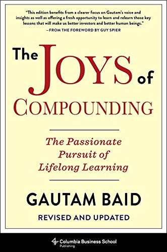

高塔姆·巴伊德（Gautam Baid）是一位出生于印度的价值投资者，曾管理一只专注于印度中小盘股的基金，现居美国。他自幼深受沃伦·巴菲特与查理·芒格投资哲学的影响，在职业生涯早期便开始系统性地阅读、记笔记，并将各领域的知识融会贯通于投资实践之中。《复利的喜悦》最初于2019年自出版，2020年由哥伦比亚大学出版社修订再版，被纳入哥伦比亚商学院格雷厄姆与多德投资系列丛书——这一系列专门收录价值投资领域的经典著作，足见学术界对本书的认可。
全书以"复利"为核心隐喻，但所讨论的远不止财务回报的复利增长。巴伊德认为，知识的积累、良好习惯的养成、人际关系的深化，同样遵循复利法则——早期的微小进步会随时间产生惊人的累积效应。书中融合了超过两百位杰出人物的智慧，涵盖投资策略、行为金融、决策科学、心理学与哲学等多个维度。在投资层面，巴伊德详细阐述了如何识别具有持久竞争优势的企业、如何评估管理层品质、如何构建集中而非分散的投资组合，以及如何在市场波动中保持纪律。在个人成长层面，他强调终身学习的重要性，主张投资者应把提升自身认知能力视为最重要的投资——因为投资回报的上限，最终取决于投资者自身的思维质量。
本书出版后获得了价值投资界众多知名人士的推荐。世纪管理公司创始人阿诺德·范登伯格（Arnold Van Den Berg）评价道："Over the years, as I've realized the importance of learning through wisdom instead of suffering, my favorite gift has been to give a person a great book. This book is going to go to the top of that list."Gardner Russo & Gardner管理合伙人托马斯·鲁索（Thomas A. Russo）表示："Gautam Baid presents exactly the types of examples and insights from fabled investment practitioners that I believe can help investors avoid common yet predictable traps."盖伊·斯皮尔（Guy Spier）为本书撰写了序言，MOI Global主席约翰·米哈尔耶维奇（John Mihaljevic）称之为"即时经典"（An instant classic），认为它是"面向投资者及所有追求自我提升之人的终身学习权威指南"。
对于关注价值投资与长期思维的读者而言，《复利的喜悦》的价值在于它并非单纯的投资技术手册，而是将投资置于更广阔的人生框架之中。巴伊德用自己从印度小城到管理美国基金的亲身经历证明，系统性的阅读、独立思考与耐心持有，是普通投资者在长期中获取超额回报的可行路径。2024年本书中文简体版由中国青年出版社出版，书名译为《复利的喜悦》。